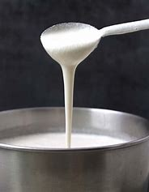
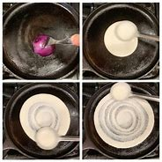
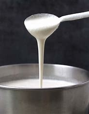
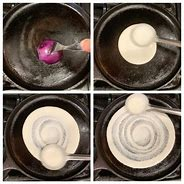

DOSA
 



ESTIMATED CALORIES INTAKE:
387 Cal
INGREDIENTS:
- Rice: Idli rice or dosa rice for best results.
- Dal: Premium urad dal white in color (ulutham paruppu).
- Other ingredients: Salt to taste and oil for cooking dosa.
RECIPE TO MAKE DOSA:
>
- Add urad dal in one bowl, wash it nicely in water a couple of times, and drain. Now soak it with fresh water and leave it for 4 to 6 hours.
- Similarly, in another bowl, add rice. Wash it nicely a couple of times and drain. Add fresh water and soak for 4 to 6 hours.
- Grind the dal: Drain the water from the dal. Add the drained dal to the wet grinder or mixie jar with ½ cup water and grind to a thick, smooth paste. Add water in increments and grind. Transfer the ground urad dal to a large vessel or conatiner.
- Grind the rice: Drain the water from the rice. Add rice with ½ cup of water to a wet grinder or mixie jar and blend it until it is smooth. Add water in increments as needed.
Transfer this ground rice to the ground urad dal and mix.
- Dosa Batter: The fermented batter is generally going to be thick. Add salt and a little water based on the consistency of the fermented batter and mix. Undisturbed batter, once fermented, can be stored for 5 to 6 days
- Grease a cast iron skillet or non-stick pan with oil. Ensure no excess oil is left and it is absorbed completely
- Heat dosa tawa on medium flame
- Once hot, pour a ladle full of batter at the center and spread it in a circular motion. If you are not able to spread quickly, it means your batter is too thick. You may add a little extra water to the batter and mix.
- Drizzle oil or ghee around the edges. In 2 to 3 minutes, the edges will start to come off, and the bottom of the dosa will start turning golden brown.
- Remove the dosa from the pan or flip and cook for another 1 minute if you like. Flipping is optional for this dosa.
- Before spreading the next dosa, you may grease the pan with oil or ghee and remove excess oil using a clean kitchen towel.
- Keep any leftover batter in the refrigerator.